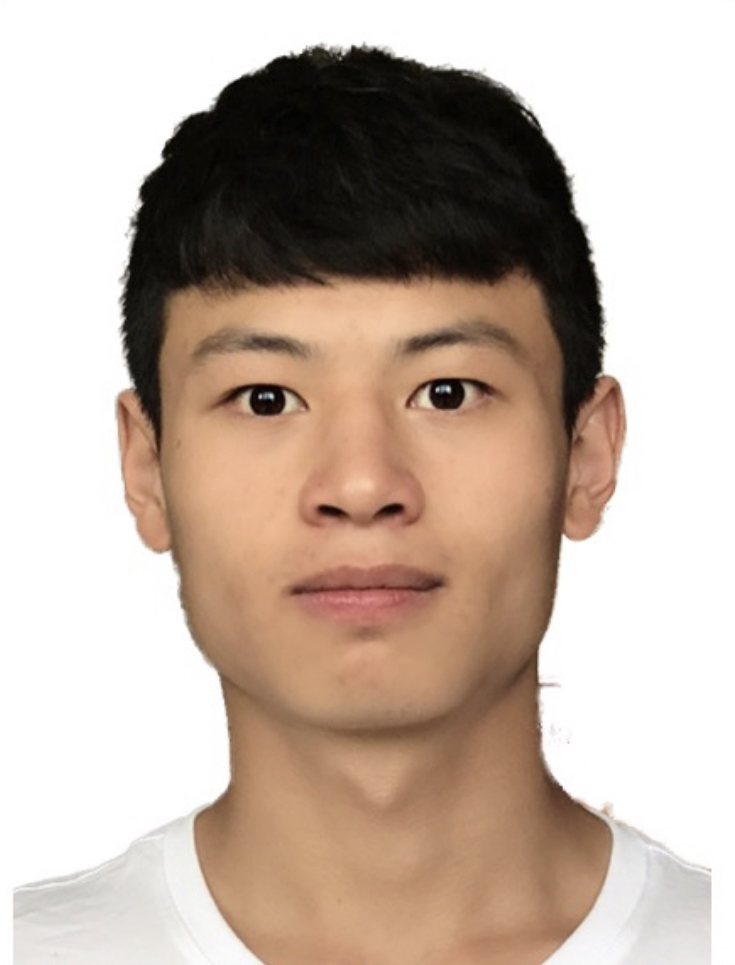
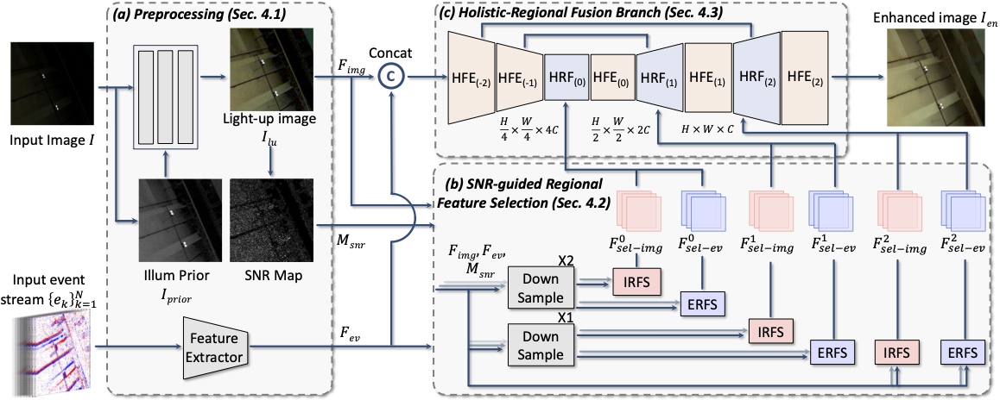
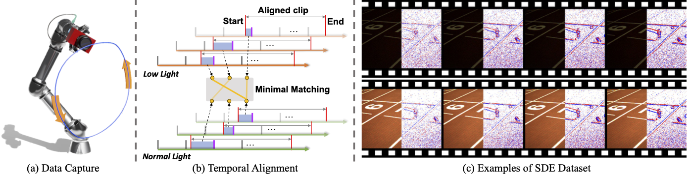

Towards Robust Event-guided Low-Light Image Enhancement: A Large-Scale Real-World Event-Image Dataset and Novel Approach
Accepted to CVPR 2024
-

Guoqiang Liang
AI Thrust, HKUST(GZ)
-
Kanghao Chen
AI Thrust, HKUST(GZ)
-

Hangyu Li
AI Thrust, HKUST(GZ)
-

Yunfan Lu
AI Thrust, HKUST(GZ)
-

Addison Lin Wang
AI & CMA Thrust, HKUST(GZ)
Dept. of CSE, HKUST

Abstract
Event camera has recently received much attention for low-light image enhancement (LIE) thanks to their distinct advantages, such as high dynamic range. However, current research is prohibitively restricted by the lack of large-scale, real-world, and spatial-temporally aligned event-image datasets. To this end, we propose a real-world (indoor and outdoor) dataset comprising over 30K pairs of images and events under both low and normal illumination conditions. To achieve this, we utilize a robotic arm that traces a consistent non-linear trajectory to curate the dataset with spatial alignment precision under 0.03mm. We then introduce a matching alignment strategy, rendering 90% of our dataset with errors less than 0.01s. Based on the dataset, we propose a novel event-guided LIE approach, called EvLight, towards robust performance in real-world low-light scenes. Specifically, we first design the multi-scale holistic fusion branch to extract holistic structural and textural information from both events and images. To ensure robustness against variations in the regional illumination and noise, we then introduce a Signal-to-Noise-Ratio (SNR)-guided regional feature selection to selectively fuse features of images from regions with high SNR and enhance those with low SNR by extracting regional structure information from events. Extensive experiments on our dataset and the synthetic SDSD dataset demonstrate our EvLight significantly surpasses the frame-based methods, e.g., Retinexformer by 1.14 dB and 2.62 dB, respectively.
Overall framework of our EvLight
An overview of our framework. Our method consists of three parts, (a) Preprocessing, (b) SNR-guided Regional Feature Selection, and (c) Holistic-Regional Fusion Branch. Specifically, SNR-guided Regional Feature Selection consists of two parts: Image-Regional Feature Selection (IRFS) and Event-Regional Feature Selection (ERFS). Additionally, Holistic-Regional Fusion Branch encompasses Holistic Feature Extraction (HFE) and Holistic-Regional Feature Fusion (HRF).
Collection of our SDE dataset
(a) An illustration of collecting spatially-aligned image-event dataset by mounting a DAVIS 346 event camera on the robotic arm and recording the sequences with the same trajectory receptively. (b) An overview of our matching alignment strategy. (c) An example of our dataset with images and paired events captured in low-light (with an ND8 filter) and normal-light conditions.
